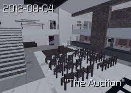
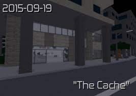
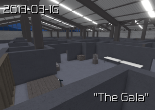

ENTRY POINT
Auction is a mission performed at a San Fransisco bank which is also a halcyon money launderer.In this mission you will need to get in a bank that is having an auction for a gem.To do this mission you will need to hack the auctioneers laptop that randomly spawns at places.Once you have hacked it it will be encryted and to unecrypted you will need to interogate the Auctioneer to get the encryption key.To lure the auctioneer you have 2 choice either lure normally or use the radio to make him/her to go to the managers office.After you have interogated the auctioneer you will have the encrytion key,after that you may continue the hack.Once finished you will know that the gem is located in the vault and you will need to interogate the right employee because he/she was the one that is supposed to open the vault when the time comes.You will need to find the employees id from hacking the pc or using the archives.After that you will need to get him/her to a safe and unseen place.Luring the employee is not needed since rose will tell her to go to an unseenspot either the managers office or in the 2nd floor front part of the bank.After interogating the employee will need to open the vault and grab the gem and get out.
On this mission you will need to transfer money to phoenix through a bank called cincinati trust.This is the bank that you have robbed in the mission of the deposit.At this mission you will need to get in the bank but once you have open a door the timer will be turned on if not disabled in time it will raise an alarm.The time of the alarm is depending on the difficulty you are playing the lower it is the more time you have.After disabling the alarms you will need to find and get in the server room.Once you are in hack the server to begin the money transfer.After the money transfer is finished you may exit the bank.
The gala is a simulation where halcyon test you stealth capabilities on this mission you will need to rob artifacts that looks like the jenga toy.The ammount of artifacts you have to steal is depending on your difficulty the lower it is the lesser the ammount you will need to steal.There are 2 types of places you can get the artifact either case or crates.For crates you will need to use 4 drill location once all is drilled you may get the artifacts or you have an option to us ethe crowbar but this is faster but it takes up all of your inventory slots.Also carrying any type of bags whether it is the gear bag the body bag or the artifacts will be considered suspicious unless you have a guard disguise.Once all artifatcs are stolen you may proceed to leave.